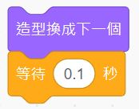
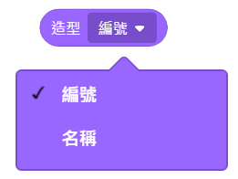

|
|
|---|
 造 型
造 型
「造型」是角色在舞臺上所呈現出來被人家看到的外觀。每個角色都至少需要一個造型。
一個角色可以有多個造型（不論相同否），當角色接收到更換造型的指令時，它就會以對應的造型顯現在舞臺上。當下只會顯示一個造型，不會多個造型同時顯現。
而除了角色可以在它上面任意移動外，它還可以放置腳本、背景和聲音，和角色很類似，但由於舞臺背景是不會動的，因此它有一些積木功能是無法使用的，比如動作類積木、尺寸大小積木......等。
「造型」是一種圖像，可以通過點按角色的「造型」標籤，來查看它的所有造型清單或是更改造型的順序。在這裡也可以新增角色的造型，新增的方式除了可以從範例造型庫中選擇、從電腦中上傳外，也可以利用圖像編輯器來自己創建繪製新的造型，除了新增造型外，也可以編輯修改現有的造型，當然也可以刪除造型。
在Scratch編程中，可以隨時的透過積木操控來變換指定造型，改變角色的外觀，而造型最常見的用途就是搭配〈造型換成下一個〉積木和〈等待秒數〉積木，來使角色呈現動畫效果。
角色的「造型」有造型編號和造型名稱兩個重要的屬性，造型編號是按造型在清單中排列的順序自動産生的（可以用滑鼠拖動造型的方式來改變造型在清單中的順序位置，即可改變其編號），造型名稱則是可以自己命名的。最後新增的造型會自動排在清單的最後位置。
有些專案中的角色，會在編程過程中利用公式計算的結果值來對應角色的造型編號或造型名稱，使角色更換它的造型，此時，角色造型的排序或是造型名稱的命名方式就會有一定的規則，並顯得重要了。